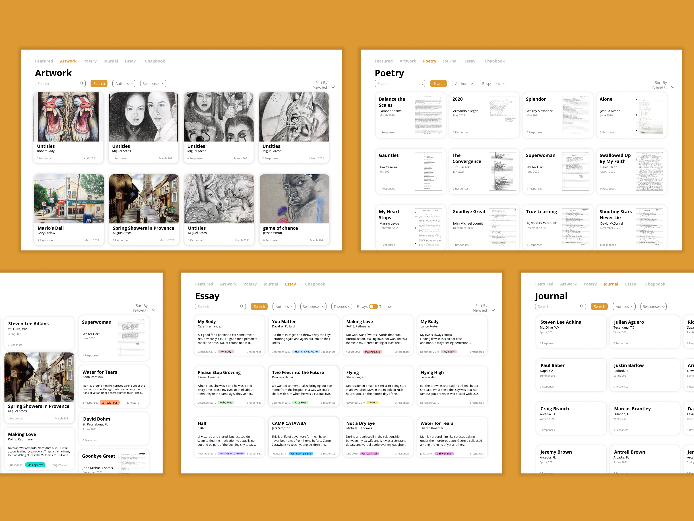

Jiwoo Cheon
Cornell '22, Software Engineer and Aspiring Teacher
I'm a senior studying Computer Science with a minor in math at Cornell University. On campus, I'm a teaching assistant for the Introduction to Algorithms course, and I'm one of the current clarinet section leaders of the Big Red Marching Band. I'm passionate about using technology for social good, particularly to increase accessibility to higher quality education. My interests include software design and development, algorithms, cryptography, and machine learning.
I'll be graduating in December 2022, and I'm currently looking for full time software engineering positions anywhere in the U.S.
Connect with me on LinkedIn or email me at jc2762@cornell.edu.
Technical Skills
I've picked up a few programming and related skills through courses, projects, and internships, and I'm always looking for ways to learn more!
Python
Over the past 3 years, I've used Python for a variety of applications, including machine learning and web development, which gave me experience with Pandas, NumPy, and PyTorch. For my research on recommender systems, I wrote Python programs to scrape data from a website, run recommendation algorithms, and manipulate and visualize data. As a developer in Hack4Impact on the Love Living at Home (LLH) project, I used Python Flask to implement a web platform.
React/JavaScript/HTML/CSS
As a developer on Hack4Impact and a SWE intern at T-Mobile, I gained two years of experience in front-end development using React as well as plain HTML/CSS/JavaScript. During my internship at T-Mobile, I built a real-time data visualization dashboard using React and JavaScript with a SQL database.
Java
I have 3 years of experience with Java. Since first learning Java in the Object-Oriented Programming course (CS 2110) at Cornell, I programmed an Android application with Java during my work at SmithMicro. I have also used Java to implement algorithms for the Introduction to Algorithms course, and as part of my responsibilites as a teaching assistant, I helped students debug their Java code for their Algorithm homeworks.
Algorithm Design and Analysis
I've been an undergraduate teaching assistant for the Introduction to Algorithms course at Cornell for two semesters. Through teaching and answering student questions, I have gained a deeper understanding of algorithm techniques, such as greedy and dynamic programming, and applying them to solve novel problems.
Projects
Click below to learn more about some of my projects!
Research on Recommender Systems
Machine Learning, Data Analysis, Python, Pandas
In summer 2022 I did machine learning research at Cornell with Professor Sarah Dean. I created a graph with three node layers that represent the multiple stakeholders in a Recommender system: the providers that supply the items, the items which are recommended, and users who receive the item recommendations. I defined item and provider visibility, which is a graph-based measure that represents the number of users that sees an item or a provider through the recommendations that they receive from the system. By measuring and comparing the visibilities of items and providers that are recommended by various recommendation algorithms, I found that common collaborative filtering methods show popularity bias for providers similarly to items.
Skills learned:
- Collecting data by webscraping and cleaning data
- Implmenting and manipulating large graph and identifying its properties
- Writing a comprehensive report to communicate technical work
Love Living at Home
Web development, Python, Flask, SQLAlchemy
As a developer on the Love Living at Home (LLH) project, I worked on a web product that would enable staff at LLH manage their volunteers' information and service requests. LLH staff can update and modify data securely through this website. I specifically implemented the transportation requests page as a form where LLH staff can pick a date/time, location, contact information, along with other details about the request and submit it into the requests database.
Skills learned:
- Implementing an efficient and intuitive UI using Python Flask
- Using Pandas and SQLAlchemy to access and modify the database
- Working in an agile software development team
Avatar Game
OCaml, Functional Programming
As part of the course CS 3110: Functional Programming and Data Structure, I worked in a group of four to create a text-based game based on the Avatar: The Last Airbender series.
Skills learned:
- Implementing an efficient and intuitive UI using Python Flask
- Using Pandas and SQLAlchemy to access and modify the database
- Working in an agile software development team
Leadership
Project Management
As project manager of the Prisoner Express project, I led the development of an online archive of art and written works created by incarcerated people. At the start of the project, I organized meetings with the technical lead, the design lead, and our partner from Prisoner Express to identify the pain points of the existing archive and desired features for the new website. I then worked with the tech lead to determine the scope of the project and set a detailed, weekly timeline for our semester-long development and agreed upon deadlines and deliverables with our partner. During the semester, I helped onboard our five developers to the React and Airtable API tech stack, facilitated communication between the developers and designers, and planned and led weekly scrum meetings to ensure timely development.